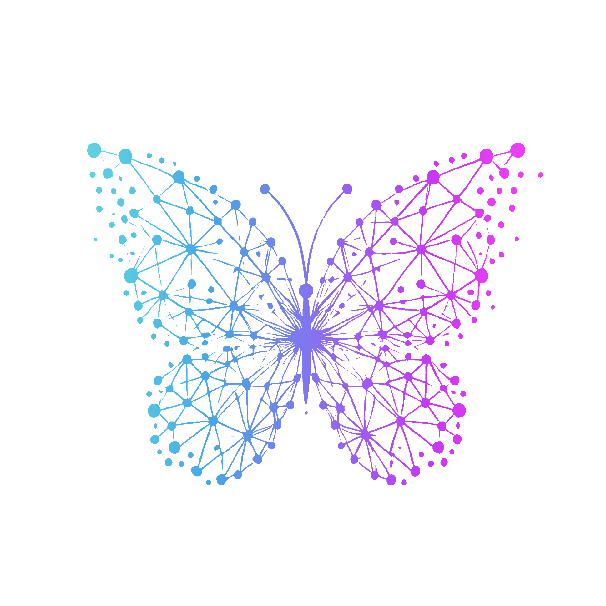

Hi there! My name is Engracia. I'm passionate about solving puzzles, tackling data challenges, playing board games, and dancing. Before diving into the world of data, I spent several years working as a Project Manager across various industries, as well as a Business Analyst helping startups analyze their business plans and processes. I focused on identifying areas for improvement and implementing changes to boost efficiency and successfully launch their businesses. My journey into Business Intelligence began around 2016, and I was instantly intrigued. It combined three of my strengths: strategic thinking, logical and analytical reasoning, and artistic creativity (my first degree is in Fine Arts!). Later, I discovered the field of Data Science, which I found even more fascinating. This led me to co-found my own startup, Arrow Data Specialists, alongside another Data Scientist. Since then, I've been involved in a variety of exciting projects across data analysis, data science, business intelligence, and business analysis. In 2017, I also became involved with the Project Management Institute (PMI) community, where I’ve been an active volunteer. Over the years, I’ve contributed to the growth and development of both new and experienced project managers, and it's been a rewarding part of my journey.
My Experience
- Data Specialist - memoQ 2021-2025
- Product Marketing Manager - memoQ 2020-2021
- Business Development Manager - memoQ 2019-2021
- Business Analyst - Project Manager - Arrow Data Specialists 2017 - 2018
- Business Analyst - Project Manager - Quoda 2017 - 2018
Years of Experience by Topic
- Data Science
- Data Analysis
- Data Engineering
- AI Engineering
- Machine Learning
- Business Intelligence
- Business Analysis
- Project Management
My Education
- College degree in Software Engineering - Centennial College, Canada
- Certificate in Data Science - University of Waterloo, Canada
- Executive MBA in IT Management - FGV, Brazil
- Postgrad in Strategic Management - Faculdade Projeção, Brazil
- Bachelors Degree in Fine Arts - Universidade de Brasília, Brazil
My Projects
Git Portfolio
Throughout the years, I always wanted to join Data Science competitions for fun, for practice, and to learn new skills. It had always been on my bucket list, but never quite made it to the top of my priorities due to lack of time. Now, in 2025, I’m excited to share that I’ve finally participated in my first Data Science competition on Kaggle! The goal is to keep joining more challenges, share my learnings with the data community, and contribute to the future of AI. If you’d like to check out my project (soon to be projects, plural!), feel free to visit my GitHub page - Engracia Batista - GitHub
Code Chronicles
After completing a Prompt Engineering course organized by the Project Management Institute in 2024, I went a little wild creating GPTs. My favorite creation is Code Chronicles, a gamified GPT where users choose the type of adventure they want, and the chat automatically begins building a story. At each gateway, the user must solve a Python coding challenge to continue their journey. You can find it today in the ChatGPT Store, and a dedicated webpage for the game is currently in development. Give the GPT a try, just click the following link - ChatGPT - Code Chronicles
My Articles
Back in 2023, when I assumed the position of Director of Volunteering and Membership at the PMI (Project Management Institute), we decided to create a data team to manage volunteer and member data, as well as to generate reports and insights. With this initiative, I began mentoring some brilliant new minds aspiring to work in Data Analysis and Data Science. From time to time, I also hosted webinars on topics related to data, business analysis, and project management. Dedicated to my mentees and to anyone who loves or wants to work in these fields, I started writing articles to guide and advise others.
You can check out my articles on my Medium page - Chrysalytics - Medium
Volunteer Work
- Director of Membership and Volunteering - PMI-DF 2023 - 2024
- Mentoring Program Cycle 10 - Project Manager - PMI-DF 2023
- Mentoring Program Cycle 7 - Project Manager - PMI-DF 2022
- Translator - PMI-DF - 2017 - 2018
- Sponsorship Program - PMI-DF - Project Manager - 2017 - 2021